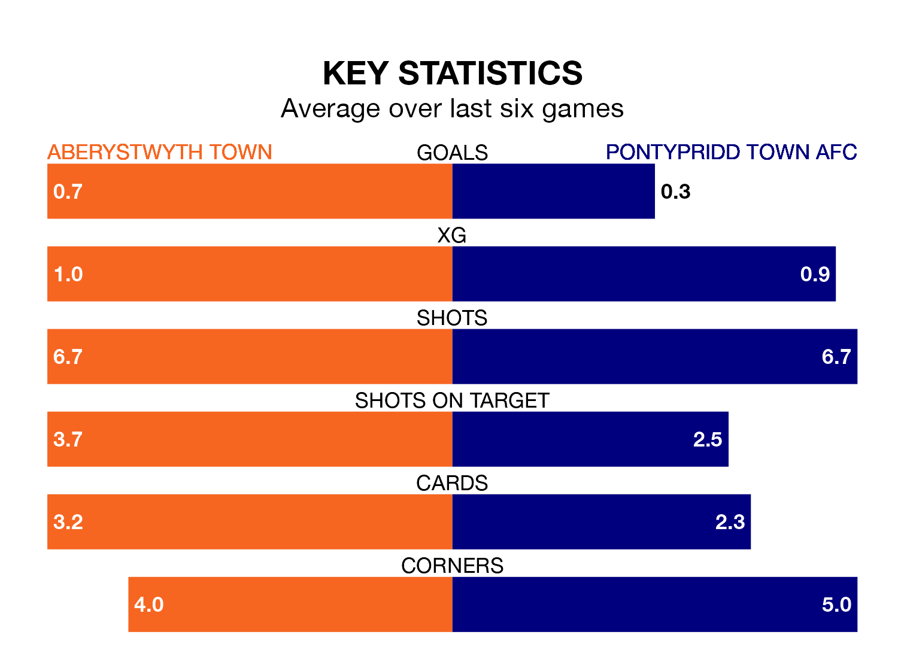

Pontypridd Town AFC travel to Park Avenue for Sunday's early match against Aberystwyth Town looking to bounce back from defeat last time out in the Welsh Premier League.
The Dragons, who sit zero in the league after 31 games, fell to a 3-0 home defeat to Penybont on April 13.
They face an Aberystwyth side who also lost their last match, a 2-1 defeat to Barry Town United, and who sit zero in the table.
With 23 goals in 31 games so far this season, Pontypridd Town are the league's-5th-lowest scorers with 0.7 goals per game. But they are conceding fewer than average too, letting in 38 goals at a rate of 1.2 per game.
Aberystwyth are also below average scorers, with 0.8 goals per game, compared to a league average of 1.5. They have conceded 1.8 goals per game.
In the last 10 years, Aberystwyth and Pontypridd Town have played each other on eight occasions. Aberystwyth won one of them, Pontypridd Town four, and they drew three times.
On average, the Seasiders scored 0.9 goals and the Dragons 1.4 in those matches.
Their last meeting was on April 9, when they played out a 0-0 draw.
Town are in disappointing form in the Welsh Premier League, with one win and two draws from their last six games.
And also with a win and two draws over that period, the Dragons' form is identical – they have both taken five points from 18.
Updated: 15:40 (UTC), 18/04/24